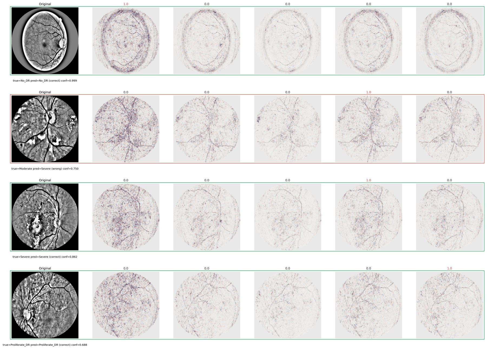

Did the model look at the retina?
Toward Fair Explainable AI in Medical Imaging: Mask-Aware Benchmarking of Grad-CAM and SHAP for Diabetic Retinopathy. IEEE, 2026.
Saeed Thabit and colleagues · United Arab Emirates University, College of Computing and Artificial Intelligence, with the INDUCE lab.
A fundus photograph is graded on a five-step scale, from no retinopathy to proliferative disease. A model can return that grade in a moment. The clinician’s question is narrower: which part of the eye carried the decision, and did the highlighted region actually matter?
The study answers with two maps of the same prediction. Grad-CAM shows the region the network used. SHAP assigns each pixel a signed push, for the grade or against it. Both maps are then restricted to the retinal disc, so credit that spills onto the dark corners isn’t counted.
- Fundus image
- Pre-processing
- Trained model
- Grade
- Grad-CAM and SHAP
- Retinal-disc mask
- Report
The two explanation methods are stronger on different grades.



What this study does not show.
APTOS grades the whole image and does not outline lesions. A heatmap is not yet proof that the model found a microaneurysm, a haemorrhage, or an exudate. That is the limit of this study, and the next measurement the work needs.
Have lesion-annotated data or a clinical question?
Lesion-level validation is the next step for this work. We’d like to hear from clinicians and dataset holders.